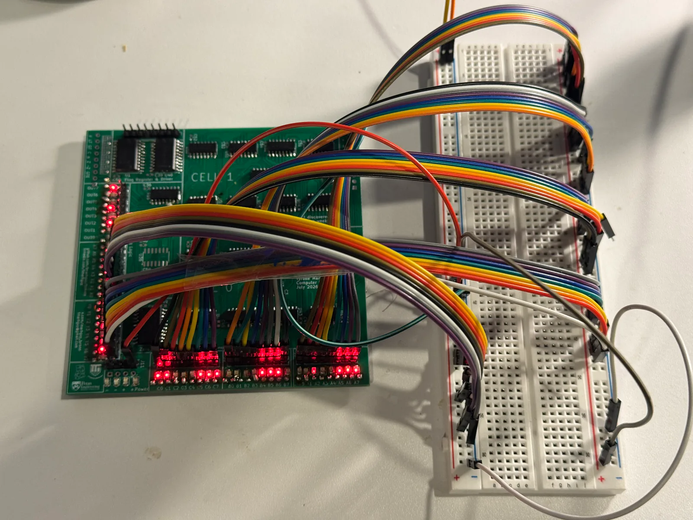

Dispatch · Lot 07
First phase of assembly
The DigiKey box landed. Every 74ACT151 is down on one board, and so are the 74ACT283 adders. Seven LEDs. The copper is finally next to the sim.
Today is perhaps one of the most important ones of this project. The parts from DigiKey arrived — there was an initial delay, but they replaced the order when I called. After weeks of staring at digital schematics and KiCad renders, having physical silicon show up at the door is a huge milestone.

With the components finally here I cleared the desk, set out the flux and tweezers, and laid the tools for a real assembly pass. The footprint on these SMD chips is a different object when you are holding them than when you are placing them on a grid.
Logic down
All parts are in. I have soldered every 74ACT151 on one of the boards, and each adder (74ACT283). The 74ACT series wants a steady hand. Laying down that much logic takes time and patience.
The LEDs are tiny. I have soldered about seven of them. Aligning them without bridging the pads is a test of endurance, but seeing those indicators sit on the copper makes it worth it.
Next to the sim
It is exciting seeing these parts for the first time and each of them fitting. I held the half-soldered board next to the simulation on the monitor. Looking back and forth between the digital truth table and the physical gates on the mat is surreal.

Each one fit so nicely that it made the months of routing and DRC feel suddenly concrete. Designing the paths in KiCad is one thing. Seeing the copper line up with the pins is another. This board is finally coming to life.

Earlier in the paper: the order, the bare boards, the iron. Lot 07 is no longer a render.